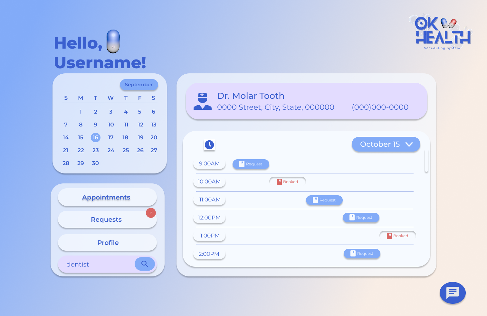
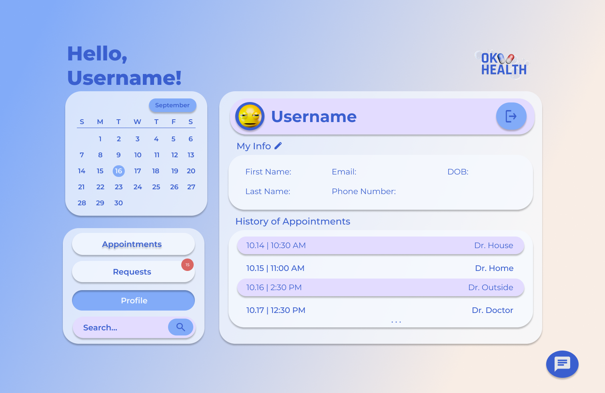
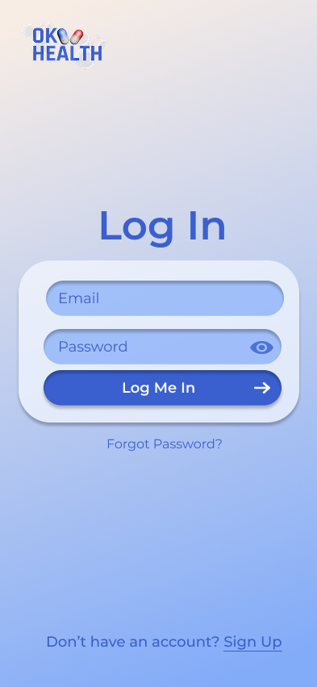
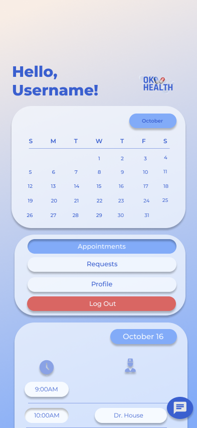
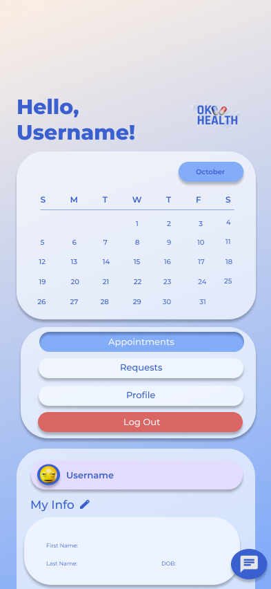
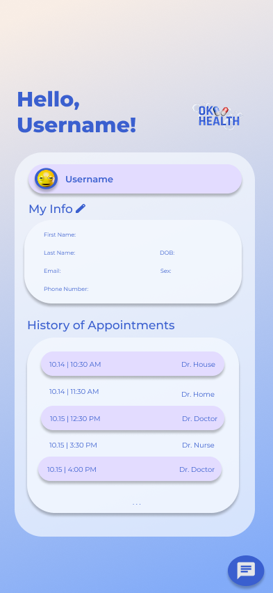

OKHealth

Color Palette
A monochromatic blue palette was chosen for the interface due to its calming qualities and association with reduced visual stress.
Since this is a scheduling system used for extended periods of time, the color choice prioritizes long-term comfort and focus.


Responsiveness
Since I was also implementing the UI, I designed mobile and desktop layouts separately instead of relying on collapse behavior, so each version feels intentional rather than compressed.



